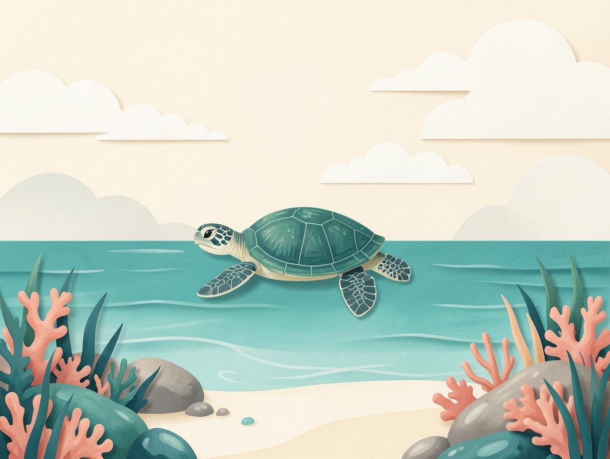

Mirror Real Traders
Leader track records computed from linked brokerage accounts, never self-reported.
The Robinhood mirroring bot that lives in your Discord.
Follow verified traders. Every trade they make in Robinhood is mirrored in your own account, within limits you set, all from Discord.

Mirroring should be easy to inspect, pause and size to your account.
Leader track records computed from linked brokerage accounts, never self-reported.
Choose fixed dollar, proportional or capped allocation, with filters for each trader.
Daily loss limits, allocation caps, buying-power guards and a global kill switch.
Mirrored orders appear in your DMs with a veto button before they reach the market.
Shadow-mirror a trader with virtual money before committing a dollar.
See detected latency, slippage and follower returns beside leader returns on each profile.
Find Turtle Trade and follow the build.
Connect Robinhood privately, never in a channel.
Set a budget, filters and risk limits for each trader.
Watch virtual trades before you decide to go live.
A concept profile. These figures are illustrative, not a real trader's performance.
Account-derived history would appear here, with an equity curve you can inspect before following.
Planned leader histories come from linked brokerage data, not numbers typed into a profile. Paper-mirroring results let followers see how the same signals would have landed in their own account.
Leaders can be delisted for excessive drawdowns, inactivity or a shift away from their stated trading style.
Verification and delisting rules are planned features, not live services yet.Concept screens, not live bot activity.
Your paper mirror is up to date.
Check the size and your limits before it goes through.
Verified track record, drawdown and mirroring results, side by side.
Account data Risk HistoryWe're starting with Robinhood. A broker-abstraction layer is planned for Tradier, Alpaca, IBKR, Schwab and tastytrade, so leaders and followers could use different brokers.
Turtle Trade is independent and is not affiliated with Robinhood or the other brokers named here.In development
Private beta
Public launch
*Target window, subject to change.
Plan details are previews. Pricing will be revealed at launch.
Free
Pricing at launch
Pricing at launch
Pricing at launch
No. Turtle Trade is an independent tool. Robinhood is a trademark of its owner.
No. You connect your own account. Turtle Trade plans to relay and mirror signals within the limits you set.
Planned track records are computed from linked brokerage data. Paper-mirroring results are shown before you follow.
The planned pause control stops mirroring and cancels pending orders with one button.
Join the Discord for launch updates.